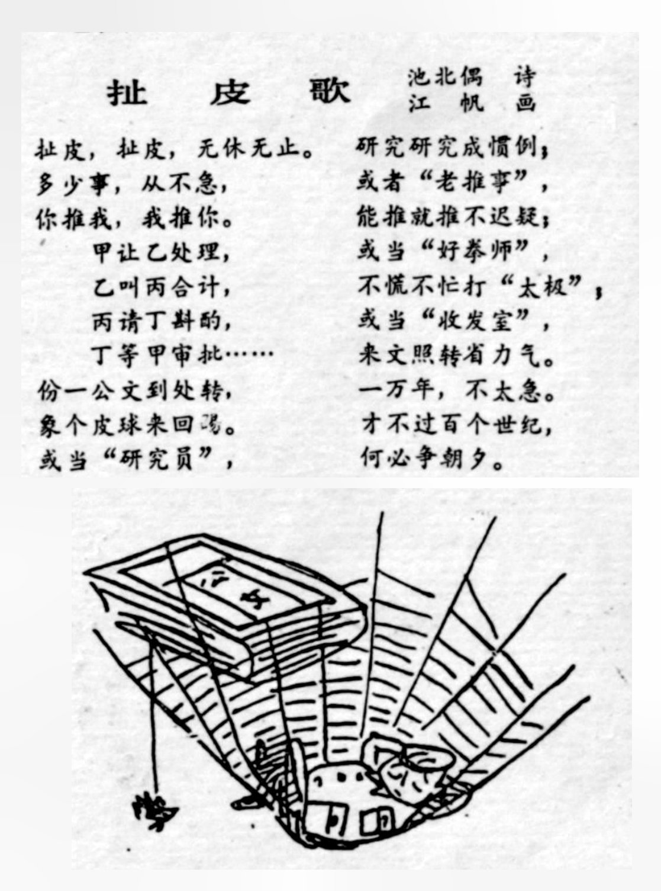

江帆画；池北偶诗 《人事》1988年第5期（总第32期），封三
扯皮歌
Song of Passing the Buck
- Caption
- 扯皮，扯皮，无休无止。多少事，从不急，你推我，我推你。甲让乙处理，乙叫丙合计，丙请丁斟酌，丁等甲审批……份份公文到处转，象个皮球来回滚。或当“研究员”，研究研究成惯例；或者“老推事”，能推就推不迟疑；或当“好恭师”，不慌不忙打“太极”；或当“收发室”，来文照转省力气。一万年，不太急，才不过百个世纪，何必争朝夕。
Wrangling, wrangling, without end. However many matters, never any hurry: you push it to me, I push it to you. A asks B to handle it, B asks C to talk it over, C asks D to weigh it, D waits for A to approve… Every document goes round and round, rolling back and forth like a ball. Some play “researcher,” making “we'll research it” the rule; some play “old pusher,” pushing whatever can be pushed without a pause; some play the “polite master,” unhurriedly doing taiji; some play the “mail room,” forwarding whatever comes in to save effort. Ten thousand years is no great hurry — it's only a hundred centuries; why fight for a morning or an evening? - Text in the drawing
- 公文（？）
Documents (?) - Description
- A thick sheaf of papers, apparently labeled “documents,” is caught in a web of strands radiating from a small domed office building, while a spider dangles at one side.
- Note
- 扯皮, literally “pulling at hide,” means endless wrangling and buck-passing. The last lines turn around Mao Zedong's 1963 poem: “Ten thousand years are too long — seize the day, seize the hour” (一万年太久，只争朝夕).
- Artists
- Jiang Fan 江帆 (drawn); Chi Beiou 池北偶 (poem)
- Published in
- 《人事》1988年第5期（总第32期）, inside back cover
- Themes
- Paperwork and documents · Passing the buck · Bureaucratism

Cite
Jiang Fan and Chi Beiou, “扯皮歌” [Song of Passing the Buck], Renshi (Personnel) 《人事》, 1988, no. 5, inside back cover.